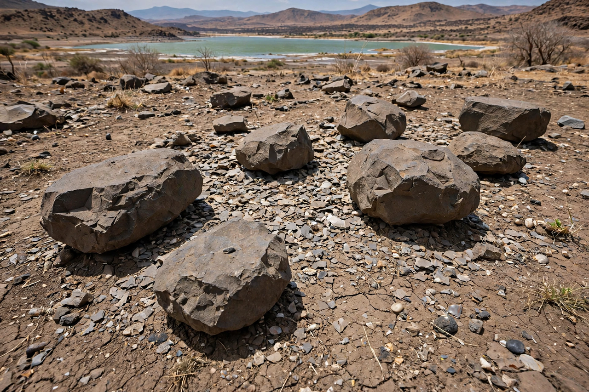

| Lomekwi | |
|---|---|
 | |
| Location | West Turkana, Kenya |
| Key site | Lomekwi 3 |
| Age | about 3.3 million years |
| Discovered | 2011–2012; published 2015 (Sonia Harmand's team) |
Lomekwi is an archaeological locality on the western shore of Lake Turkana in northern Kenya, where the site of Lomekwi 3 yielded the oldest known stone tools in the world, dated to about 3.3 million years ago. The tools predate the genus Homo and the previously oldest industry, the Oldowan, by roughly 700,000 years, and their discoverers proposed a distinct "Lomekwian" industry for them.
The tools were found in 2011–2012 by a team led by Sonia Harmand of Stony Brook University, which had been surveying West Turkana in search of the fossil hominin Kenyanthropus platyops. Twenty in-situ artefacts — cores, flakes and anvils — were excavated from sediments dated by volcanic ash layers and magnetostratigraphy to 3.3 million years; more than 130 further pieces came from the surface nearby. The discovery was published in Nature in 2015.
Lomekwian tools are notably larger and cruder than Oldowan pieces, some cores weighing around 15 kg. Experimentation suggests they were made by passive-hammer and bipolar techniques — striking a core held against an anvil — rather than the freehand precision grip of later knappers. Who made them is unknown: candidates include Kenyanthropus and Australopithecus afarensis, the species found at Hadar and Laetoli, possibly using tools much as chimpanzees use stone hammers today.
Lomekwi pushed deliberate stone flaking back well before Homo, undermining the assumption that tool-making was our genus's defining innovation, and it was followed by claims of even older cut-marked bones at Dikika (3.4 million years), which remain debated.